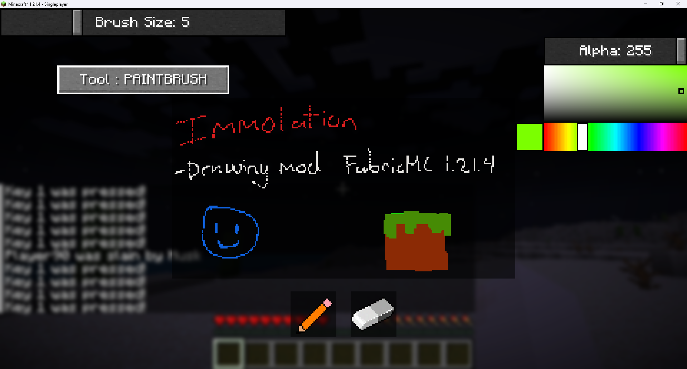
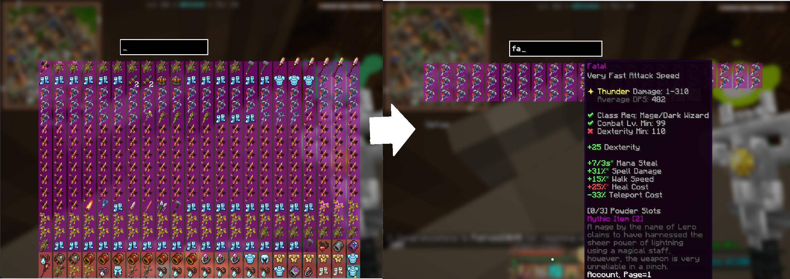

Projects

Dont Die Revolution
Technologies: C#, Unity
Worked in a team to develop a 2D rogue-like game using C# and the Unity Game Engine. Focusing mainly on the rhythm/input mechanics and integrating UI elements.

Immolation (Minecraft Drawing Mod)
Technologies: Java, Fabric API, Gradle
Developed a Minecraft mod that lets players draw pixel art in-game using a custom UI, with tools like brush, eraser, and shapes, and export drawings as PNG files for sharing or storage.

Wynntools (WIP)
Technologies: Java, Fabric API, Gradle
Built a Minecraft utility mod providing features such as multi-inventory sorting, and item evaluation by effectiveness and rarity via a custom UI.